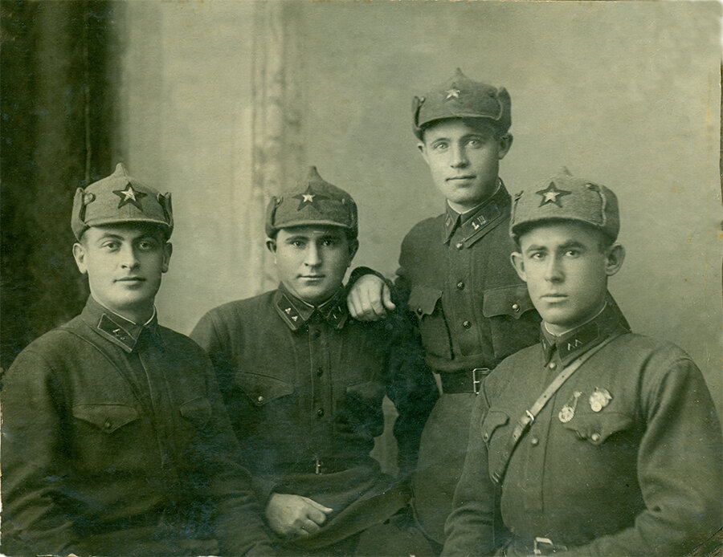
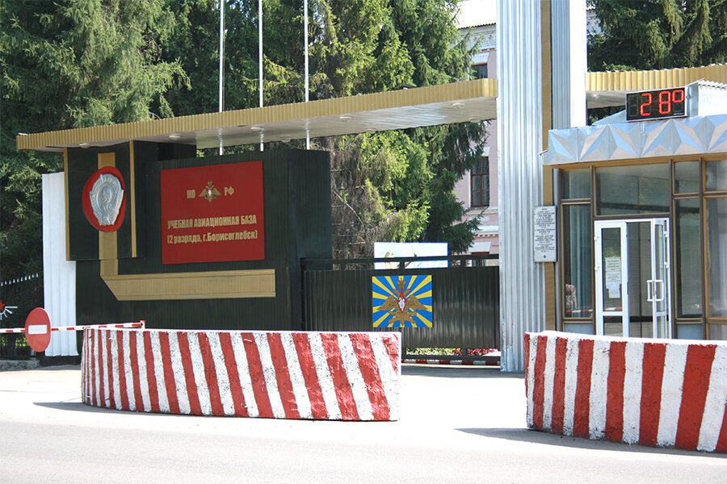
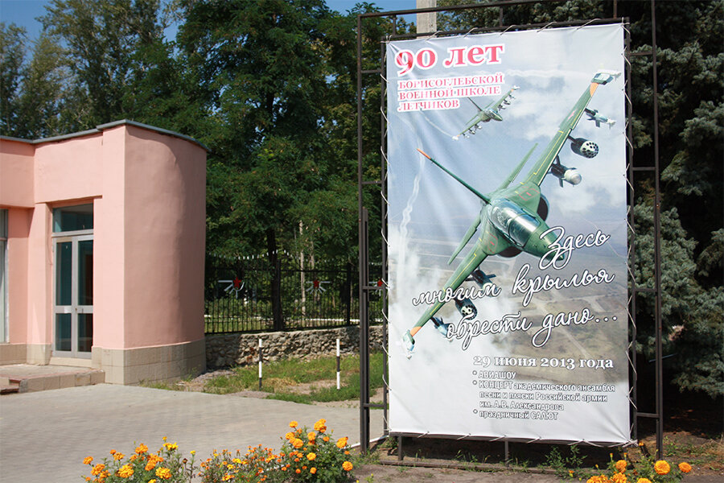
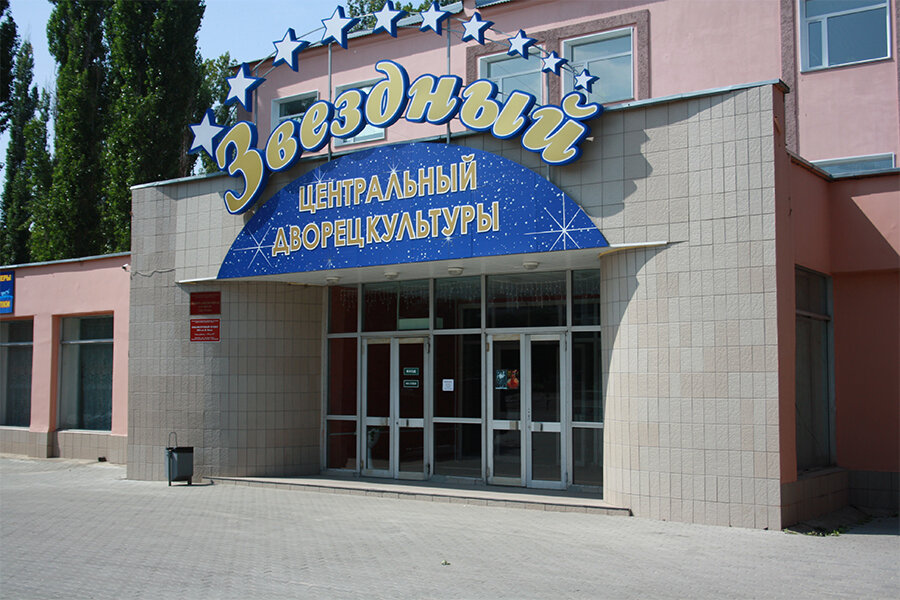

 <div style="text-align:left"><span style="font-size: medium;">Наше с внучкой пребывание в Борисоглебске в этом году отмечено замечательной находкой. В бумагах отца мы нашли вот эту фотографию.<br/><br/><div style="text-align:center"></div><br/><br/><a name="cutid1"></a> Отцу здесь (он крайний слева) около 23-25 лет, фотография сделана в середине-второй половине тридцатых годов. Он снялся вместе со своими товарищами-выпускниками курсов младших командиров. Все они получили звание командиров отделений и вскоре демобилизовались. Отец начал учебу в Ленинграде, о судьбе других мне ничего не известно. Гражданская жизнь продолжалась недолго: отца призвали на финскую, затем была Великая Отечественная, служба после войны.<br/><br/>Как я уже писал раньше, отец демобилизовался в 1959 году, когда Хрущев производил крупное сокращение Вооруженных Сил. Было закрыто и Борисоглебское авиационное училище летчиков, где отец служил в последние перед демобилизацией годы.<br/><br/>Борисоглебск в то время называли &#34;городом авиационных тёщ&#34;, многие курсанты обзаводились там семьями. Сейчас на территории бывшего авиаучилища находится учебная база (&#34;второразрядная&#34;, как гласит вывеска на воротах; это определение разряда может и уместно для штабных документов, но унизительно, на мой взгляд, для лицевой вывески славного училища, давшего нашей авиации множество летчиков-героев)<br/><br/><div style="text-align:center"></div><br/><br/>О славной истории училища напоминает лишь плакат напротив, у бывшего Дома офицеров (в наше время в обиходе его называли &#34;дэка&#34; от ДКА -Дом Красной Армии):<br/><br/><div style="text-align:center"></div><br/><br/>Впрочем, и Дом офицеров теперь называется по другому<br/><br/><div style="text-align:center"></div><br/><br/>Почему &#34;центральный&#34; и почему &#34;дворец&#34; - не знаю.</span></div> 